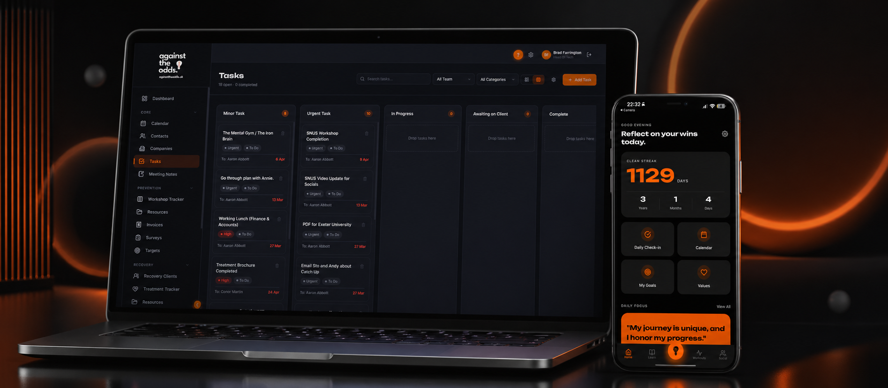

A UK gambling-harm charity was running prevention workshops in schools and one-to-one recovery coaching from spreadsheets and shared inboxes. We built a CRM that's effectively two CRMs sharing a single data model — branded as one product, split cleanly along the work that actually happens.

Against The Odds runs two operations from the same small team. The Prevention side delivers workshops in schools, colleges, and partner organisations. The Recovery side supports people in active treatment — one-to-one coaching, casework, and signposting.
Both sides were running on Google Sheets, shared inboxes, and a shared calendar. Workshop pipelines lived in someone's head. Recovery client risk ratings lived in a coach's notebook. Funder reports were pulled together by hand the week before each board meeting.
As the team grew and the funded streams diversified, the cracks widened. The brief was for one platform that could run both operations side by side — without flattening them into the same workflow, because they're genuinely different jobs serving genuinely different people.
The Prevention side runs on a kanban that tracks workshops from first enquiry through delivery to reporting. Each workshop carries facilitator assignment, capacity tracking, attendee lists, and pre/post survey results that feed straight back into the record.
The Recovery side runs on case records: structured intake covering risk rating, gambling type, triggers, substance use, and support network; session logging with progress over time; and a treatment tracker visualising where every client is in their journey.
Both sides share the same contact and company directory, the same email and calendar integration with whatever the team already uses, and the same invoicing engine — categorised so prevention and recovery income can be reported separately to funders without double entry.
Drag workshops through pipeline stages — proposed, scheduled, delivered, reported. Capacity tracking, facilitator assignment, attendee lists, all on the card.
Structured intake with risk rating, gambling type, triggers, substance use, and support network. Coaching sessions logged with progress ratings over time.
Prevention and Recovery invoices generated as PDF with separate templates and reporting categories. Payment status tracked: draft, sent, paid, overdue.
Inbound and outbound emails captured against contact records. Calendar events sync both ways with the team's existing calendar, with contacts and recovery seekers as attendees.
Pre and post-workshop feedback forms with public sharable links. Responses post directly into the case record, no manual transcription.
Engagement, stage distribution, completion rates, KPIs — pulled live from the same data the team works in every day. No spreadsheet rebuild before board meetings.